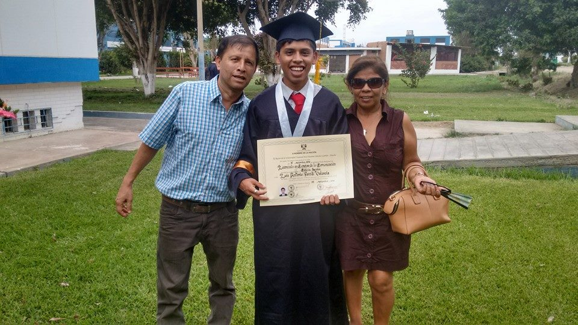

Hoja de Vida
Luis Parodi
Información Personal

- Nombres:Luis Antonio
- Apellidos:Parodi Valencia
- Fecha de Nacimiento:14 de Junio de 1992
- Lugar de Nacimiento:Huacho, Lima, Perú
Información del Perfil
Licenciado en Ciencias de la Comunicación, de la Universidad Nacional José Faustino Sánchez Carrión, con especialidad en community manager realizado en adveischool, actualmente estudiando desarrollador web en NextUniversity.
Idiomas:
- Español: Hablado y Escrito, Avanzado
- Inglés: Hablado y Escrito, Intermedio